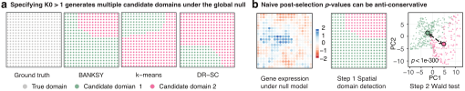
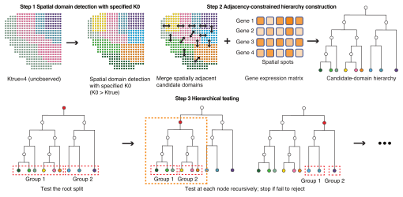

This page describes, step by step, what sigdots()
computes with its default settings. The statistical background and the
evaluation are in the SigDoTS paper (in preparation).
The question

Figure 1a-b of the paper. Left: data simulated with no domains at all, divided into two candidate domains by three domain-detection methods. Right: testing those two candidates as if they had been fixed in advance gives p < 10^-300 for a difference that does not exist.
A domain-detection method divides the spots of a tissue section into groups. SigDoTS asks, for each division it considers: could the two sides come from one single domain? A domain here is a set of spots that share one mean expression profile; the spots may still vary around that mean, with genes correlated with each other and nearby spots correlated with each other. The test has to account for one difficulty: the two sides were found by clustering the same data, and clustering always finds some separation, even in data with no domains at all.

Figure 1c of the paper: the three steps described below.
Step 1: candidate domains
The spots are divided into K0 candidate domains: by
default k-means on the first 15 principal components of x
(or BayesSpace, BANKSY, or labels you supply). K0 is chosen
larger than the number of domains expected, so that each candidate
domain lies inside one domain.
Step 2: the tree of candidate domains
Two candidate domains touch when some of their spots are among each other’s 6 nearest neighbours (small pieces of a candidate domain that are cut off from the rest of it, under 1% of its spots, are ignored here). Starting from the candidate domains, the two touching ones whose merge increases the within-group sum of squares least (Ward’s criterion, computed on the group means in the first 15 principal components) are merged, and this is repeated until one candidate domain is left. The result is a binary tree: its bottom ends are the candidate domains, its top is the whole sample, and every inner point (node) proposes to split its spots into the spots of its two branches.
Step 3: testing a split

The test at one node (the inset of Figure 1 of the paper). Top: the candidate split at the node and its cluster index. Bottom: datasets simulated from the single-domain model fitted to the node, each divided into K_v candidate domains with the same pipeline, give the null distribution of the cluster index; the observed value is compared with it.
At a node with m spots, made of K_v candidate domains:
- The statistic. The within-group sum of squares of the proposed split divided by the total sum of squares, over all genes. It lies between 0 and 1; smaller means a clearer split.
-
A model with one domain. A matrix-normal model is
fitted to the node’s m spots: every spot has the same mean expression
(the node’s gene means), and the deviations from that mean are
correlated across genes and across space.
-
Across space, the correlation of two spots at distance d is
eta * k(d / ell)(and 1 for a spot with itself), where k is the Matérn 3/2 correlation,eta(between 0.01 and 1) is the share of the noise variance that is spatially correlated, andellis how far the correlation reaches.etaandellare estimated from pairs of spots in the same candidate domain: for pairs grouped by distance, the correlation of their expression (after removing each candidate domain’s mean, and averaged over genes) is matched to what the model predicts. Using pairs within candidate domains keeps differences between them out of the estimate. - Across genes, the covariance is a few strong directions (at most 30) plus equal noise on all genes, estimated after the spatial correlation is taken out and each candidate domain’s mean is removed.
-
Across space, the correlation of two spots at distance d is
- Simulated datasets. Datasets are drawn from this one-domain model. Each one goes through the same procedure as the data: it is clustered into K_v candidate domains with the same method, its own tree is built, and the statistic of its top split is computed. These statistics show how clear a split clustering produces when there is only one domain.
-
The p-value is
(1 + c) / (1 + B), where B is the number of simulated datasets and c how many of them gave a statistic at most the observed one. Withpvalue_method = "normal_adaptive"it is instead read from a normal distribution with the mean and standard deviation of the simulated statistics; each test then uses 10 simulated datasets, or 50 when this first p-value is within a factor of 10 of the test’s level.
Step 4: from the top down, with error control
The first test is on all n spots. If it is significant, both branches
are tested in turn; if not, the node is a domain and nothing below it is
tested. A test on m spots uses the level
alpha * (m - 1) / (n - 1); with this sequence of levels the
probability of making any false split anywhere in the tree is at most
alpha (the scheme of Kimes, Liu, Hayes and Marron,
Biometrics 2017, for hierarchical clustering). A single
candidate domain is never tested.
Number of simulated datasets. Each test starts with
B_min = 10 and is allowed B_max = 10, raised
for that test to ceiling(1 / level) - 1 when this is
larger, so that the p-value can reach the level. Simulation stops as
soon as the decision cannot change: when even the most favourable
remaining outcomes could not make the test significant, or when the test
is already certain to be significant. A test on a small part of a large
sample has a small level and therefore needs many simulated datasets to
keep a split (237 for a part of 308 of the 3,639 spots in the real-data
tutorial); the normal approximation needs 10 or 50 at any level, which
makes it much faster for such trees.
Computation
-
Spatial correlation. Simulating from the model
needs the m x m spatial correlation matrix. By default SigDoTS uses the
Vecchia approximation (each spot conditioned on 60 neighbours), whose
cost grows roughly linearly with m;
spatial_method = "exact"uses the exact matrix. -
Random numbers. Each test, and each of its
simulated datasets, has its own seed derived from
seed, so results do not depend on the number of cores. - Parts that are not tested. A part with fewer than 20 spots, or whose split leaves a side with fewer than 8 spots, is not tested and is reported as one domain. A part where the spatial parameters cannot be estimated (too few pairs of spots in the same candidate domain: at least 4 distance bins with 200 pairs each are needed) is reported as untested, its spots get no domain, and SigDoTS warns.
-
Separate pieces. The tree needs the spots of a part
to be connected on the 6-nearest-neighbour graph. Where they fall into
pieces (a layer cut by a fold, or spots whose neighbours all belong to
other candidate domains), the pieces are joined by their closest spots
before the tree is built, for the data and for every simulated dataset;
summary()lists where this happened.